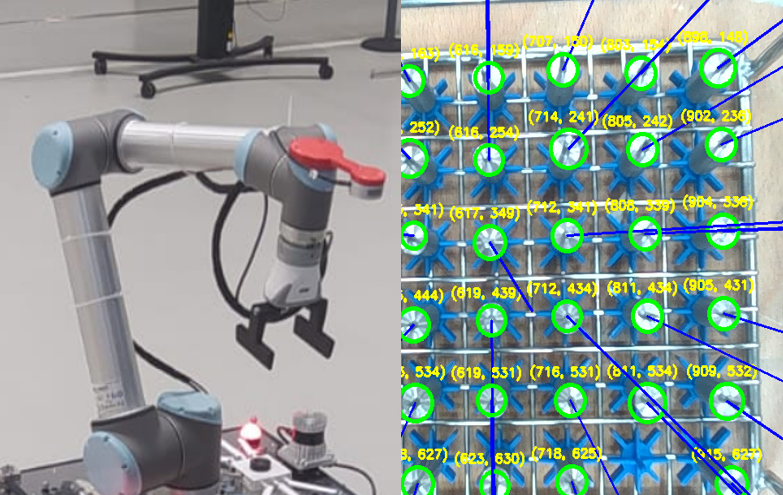

MoveIt Object Detection & Path Planning
Advanced robotic arm control with computer vision for intelligent picking tasks
Overview
This project demonstrates a complete picking task using a Franka Emika Panda robot arm equipped with an Intel RealSense D435 camera. The system detects a cylindrical object using a custom object detection script, computes the object's coordinates through frame transformation, and controls the Panda arm to grasp and place the object at a designated goal pose. The project uses ROS2 and MoveIt2 for robot motion and perception.
Key Features
- Object Detection: Detects the circular surface of a cylindrical object using a RealSense D435 camera.
- Coordinate Frame Transformation: Converts object coordinates from camera frame to robot coordinate system.
- Grasp and Place: Executes a pick-and-place task using the Panda robot arm controlled via MoveIt2.
Hardware Requirements
- Franka Emika Panda Robot Arm
- Intel RealSense D435 Camera
Software Requirements
- ROS2 (tested on Humble)
- MoveIt2
- RealSense ROS2 Wrapper for D435 camera
- Custom Object detection package
Usage
- Install ROS2: Follow the official ROS2 installation guide for your OS.
- Install MoveIt2: Follow the MoveIt2 installation guide.
- Install RealSense ROS2 Wrapper:
sudo apt-get install ros-<ros2-distro>-realsense2-camera - Clone the Project Repository:
git clone https://github.com/brunogaldos/Moveit-object-detection.git - Build the Workspace:
cd ~/Moveit_object_detection
colcon build - Start the RealSense D435 Camera:
ros2 launch realsense2_camera rs_launch.py enable_rgbd:=true enable_sync:=true align_depth.enable:=true enable_color:=true enable_depth:=true - Run Object Detection Script:
ros2 run object_detection object_detection_transformed - MoveIt Pick and Place Task:
ros2 launch moveit2_tutorials mtc_demo.launch.py
ros2 launch mtc_tutorial pick_place_demo.launch.py
Project Workflow
- Object Detection: The RealSense D435 camera captures RGB-D data, and the object detection script identifies the circular surface of the cylindrical object in the scene. The script outputs the detected object's pose in the camera frame.
- Coordinate Transformation: The detected object's pose is transformed from the camera's coordinate frame to the robot's coordinate frame using appropriate TF (transform) methods.
- Pick-and-Place Task: The transformed coordinates are fed into the MoveIt pipeline, which generates a motion plan for the Panda robot arm. The arm grasps the cylinder and places it in the designated goal pose.
Future Improvements
- Improve object detection for non-circular or irregular objects.
- Add support for dynamic objects and real-time tracking.
- Implement feedback control to improve grasp stability.
Visual Results
If the video does not play, download and open it with VLC or a modern browser.
Technologies Used
Project Impact
This project shows how robots can use vision and planning to handle objects on their own. It’s a step toward smarter factories and more adaptable automation, making robots useful for a wider range of tasks.
GitHub Repository
Explore the complete implementation, documentation, and codebase on GitHub:
View on GitHub